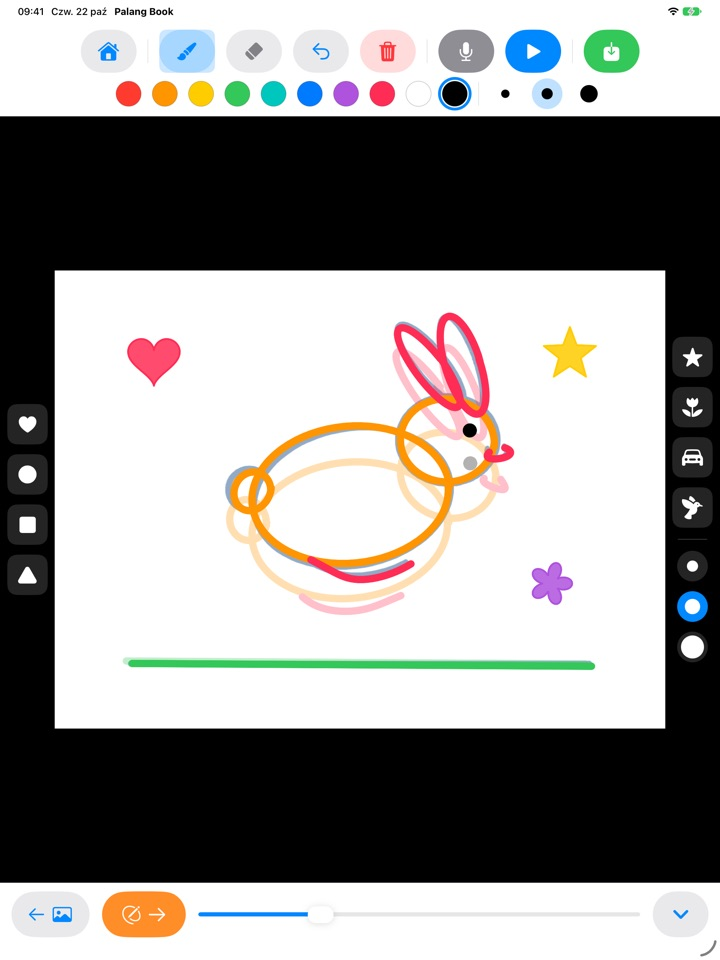
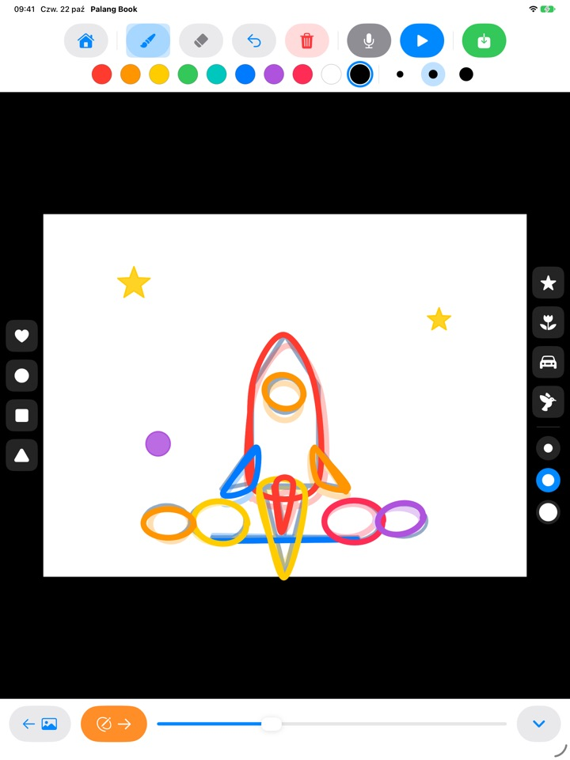
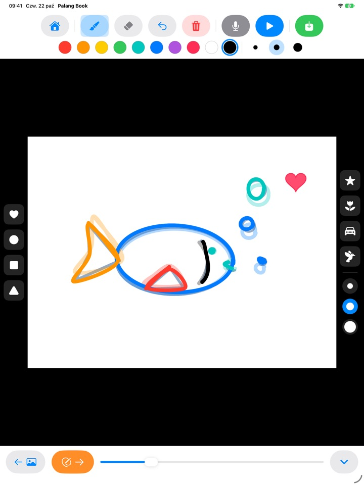
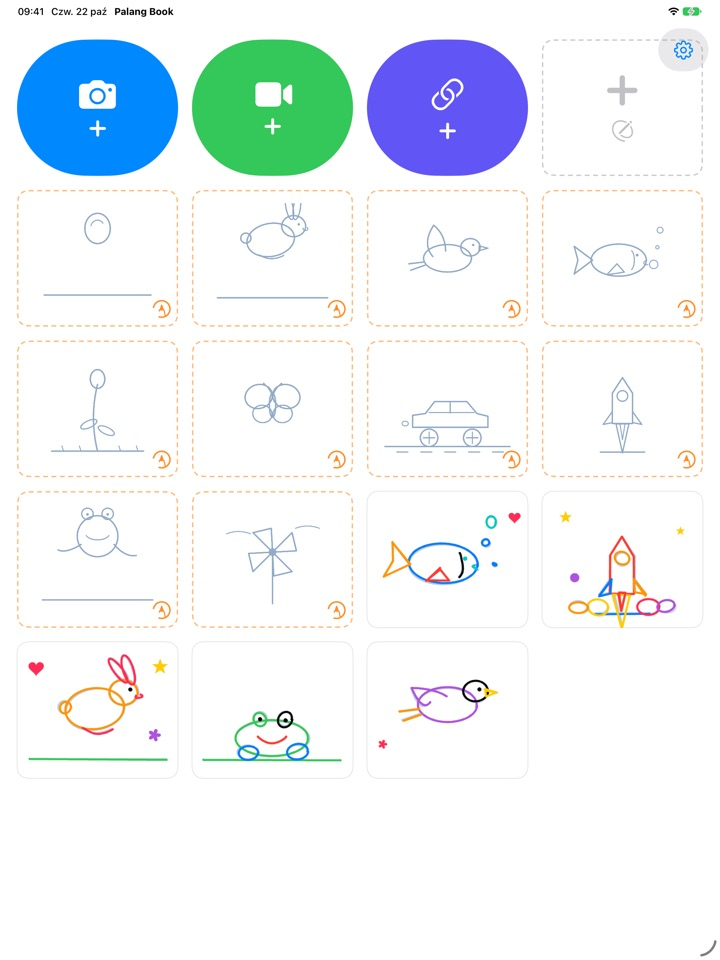

Obrysuj linie.
Patrz, jak ożywają.
Dziecko obrysowuje jasny kontur, strona po stronie. Po naciśnięciu odtwarzania kontur znika i ruszają się tylko jego własne linie. Każdy przycisk to obrazek, więc maluch poradzi sobie sam, zanim jeszcze nauczy się czytać.
Na iPada. Trzy zestawy do obrysowania są za darmo.

Narysuj kilka stron
Narysuj coś i dotknij pomarańczowej strzałki, by przejść do następnej strony. Poprzednia strona delikatnie prześwituje. Po dwóch, trzech stronach dotknij niebieskiego przycisku odtwarzania.
Szkoda, żeby taki piękny rysunek tylko stał w miejscu, prawda?
Animacja to rysowanie prawie tego samego obrazka wiele razy z drobnymi zmianami, a dziecko samo nie wie, od czego zacząć. Palang Book podkłada jasny kontur, w którym ruch jest już rozpisany, więc wystarczy podążać za linią. W chwili naciśnięcia odtwarzania rysunek zaczyna się ruszać.
Podążaj za linią, a powstanie animacja
Podskakująca piłka, skaczący króliczek, lecący ptaszek, pływająca rybka, rozkwitający kwiat, motyl, samochód wyścigowy, rakieta, żaba i wiatraczek. W każdym zestawie jest około 20 stron z konturami.
Poprzednia strona delikatnie prześwituje, więc łatwo narysować następną, a podczas odtwarzania kontur znika i rusza się tylko rysunek dziecka.

Pieczątki i dziesięć kolorów
Odbijaj serduszka, kółka, kwadraty, trójkąty, gwiazdki, kwiatki, auta i ptaszki. Pieczątki i pędzle mają po trzy rozmiary, a do wyboru jest dziesięć kolorów.
Gumka i cofanie pozwalają łatwo poprawić pomyłki. Rysuj palcem lub Apple Pencil.

Na własnych filmach albo na pustej kartce
Dodaj film nagrany samodzielnie albo z aplikacji Zdjęcia i rysuj po nim. Gdy ukryjesz tło, odtwarzane są tylko narysowane sceny, jedna po drugiej, na białej kartce. Jest też pusty flipbook zupełnie bez konturów.
Dotknij mikrofonu, by nagrać przy tym głos dziecka, a gotowe dzieło zapisz jako film w Zdjęciach i pokaż rodzinie.

Trzy kroki na start
- 1
Dotknij karty z konturem
Karty z pomarańczową przerywaną ramką na ekranie głównym to zestawy do obrysowania.
- 2
Rysuj i przewracaj
Pomarańczowa strzałka prowadzi do następnej strony.
- 3
Dotknij odtwarzania
Dotknij niebieskiego przycisku odtwarzania, a rysunek się poruszy.
Do czego służą przyciski
- Pomarańczowa przerywana karta
- Zacznij obrysowywanie
- Szara przerywana karta
- Pusty flipbook
- Niebieski aparat
- Rysuj po nagranym przez siebie filmie
- Zielony film
- Dodaj film z aplikacji Zdjęcia
- Granatowy link
- Wklej link do pliku wideo
- Pomarańczowa strzałka
- Następna strona
- Niebieskie odtwarzanie
- Odtwórz animację, dotknij ponownie, by zatrzymać
- Zakrzywiona strzałka
- Cofnij ostatnią linię
- Czerwony kosz
- Wyczyść całą stronę (cofanie ją przywraca)
- Mikrofon
- Nagraj głos, gdy animacja się zapętla
- Ikona filmu
- Ukryj tło filmu (różowa z kreską: same rysunki)
- Zielony zapis
- Zapisz jako film w Zdjęciach
Aby usunąć pracę, dotknij i przytrzymaj jej kartę na ekranie głównym. Razem z nią znikną rysunki, nagranie i dodany film.
Dużo do wypróbowania za darmo. Dostęp na zawsze, jeśli pokochacie.
Za darmo
- 3 zestawy do obrysowania (piłka, króliczek, kwiat)
- 3 zapisane prace
- 1 dodany film
- Puste flipbooki do 10 stron
- Nagrywanie głosu do 15 sekund
- Pieczątki, kolory, pędzle i zapis w Zdjęciach
Dostęp na zawsze
- Wszystkie zestawy do obrysowania, także przyszłe
- Bez limitu prac, stron, filmów i czasu nagrywania
- Bez karty Palang Book na końcu zapisanych filmów
Jednorazowy zakup, nie subskrypcja. Dzięki Rodzinie działa na każdym iPadzie w rodzinie.
Filmy zapisane za darmo kończą się krótką kartą Palang Book. Jeśli używaliście Palang Book, zanim pojawił się Dostęp na zawsze, wszystko jest już dla Was odblokowane.
Pytania
Jak działają kontury?
Jasnoniebieskie linie to kontur. Dziecko je obrysowuje, a po naciśnięciu odtwarzania kontur znika i ruszają się tylko jego linie. Wystarczy skończyć około 20 stron, a animacja jest gotowa.
Chcę odtworzyć i zapisać sam rysunek, bez filmu.
W projekcie z filmem dotknij ikony filmu na górnym pasku narzędzi, aż zrobi się różowa i przekreślona. Wtedy odtwarzanie i zapis pokazują tylko rysunek na białym tle. Odtwarzane są tylko narysowane sceny, więc kilka rysunków na długim nagraniu daje krótką animację.
Gdzie trafia gotowy film?
Dotknij zielonego przycisku zapisu na prawym końcu paska narzędzi, a film mp4 zapisze się w Zdjęciach. Przy pierwszym zapisie zezwól na dostęp do Zdjęć.
Jak dodać głos?
Dotknij przycisku mikrofonu, by nagrywać, gdy animacja się zapętla, a potem dotknij stop, by skończyć. Nowe nagranie zastępuje poprzednie. Głos trafia do filmu przy zapisie.
Link do filmu się nie otwiera.
Sprawdź połączenie z internetem i upewnij się, że adres prowadzi prosto do pliku wideo (kończącego się na .mp4 lub podobnie). Linków do stron serwisów wideo nie da się otworzyć. Prosimy używać własnych filmów albo takich, z których można swobodnie korzystać.
Dłoń ciągle zostawia ślady.
Zakrzywiona strzałka usuwa ostatnią linię, a czerwony kosz czyści całą stronę (cofanie ją przywraca). Jeśli zdarza się to często, napisz do nas, a pomożemy.
Dlaczego przed ekranem zakupu jest działanie do rozwiązania?
Żeby dzieci nie dotarły do ekranu zakupu same. Gdy dziecko dotknie czegoś zablokowanego, pojawia się duża kłódka z prośbą, by pokazać to dorosłemu, a ekran zakupu otwiera się dopiero wtedy, gdy dorosły poda wynik mnożenia.
Jak przywrócić zakup?
Dotknij zębatki w prawym górnym rogu ekranu głównego, wybierz Dostęp na zawsze, odpowiedz na pytanie dla dorosłych i dotknij Przywróć zakupy. Trzeba być zalogowanym na to samo konto Apple, na którym dokonano zakupu.
Jak wysłać opinię z aplikacji?
Dotknij zębatki na ekranie głównym i wybierz Wyślij opinię. Możesz dołączyć zrzut ekranu oraz zostawić imię i adres e-mail, jeśli chcesz dostać odpowiedź. Prosimy, aby opinię wysyłał rodzic.
Czy zbieracie dane o moim dziecku?
Nie. Palang Book nie zbiera żadnych danych osobowych, a rysunki i nagrania zostają na Twoim iPadzie. Szczegóły znajdziesz w Polityce prywatności.
Pytania lub problemy? Napisz na mizzking75@gmail.com. Zwykle odpowiadamy w ciągu 2–3 dni.